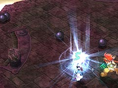

目次 > ゲームについて > 日本Falcom 攻略 > ZWEI II > ボス戦 > センチネル
らんの眼
ZWEI II (ツヴァイ 2、ZWEI II Plus)
| 概要 | 情報 | 攻略チャート |
| フード交換 | ペットについて | ボス戦 |
| 敵キャラ一覧 | ハンターランク | G-コロッセオ |
| アイテム一覧 | ガジェット一覧 | トレジャー一覧 |
| ダンジョン一覧 | クリアデータ特典 | Plusの追加要素 |
| ZWEI II攻略へ | 目次へ戻る |
| センチネル |
| アウロン大鉄塔のボスなので、火属性・火耐性を持っているのかと思いきや、しっかりとダメージを受けてくれるので「焦熱の魔法」を使うと便利です。 センチネルは爆弾をばらまく攻撃があるので、「アンチボム」を装備しておくと便利です。攻撃方法としては「焦熱の魔法」を撃ちながら、センチネルの攻撃を避け続けるのが楽です。 センチネルの攻撃としてまずひっかきがあります。ガタガタと近寄ってきてひっかいてくるので、タイミングよくジャンプなどでよけてください。画面端に追い込まれないように注意してください。  次に爆弾をばらまいて空を飛ぶ攻撃(?)があります。爆弾はアンチボムを装備してくれば、ただの演出になるので気にしなくてもいいでしょう。 爆弾の爆発と同時にセンチネルが着陸し衝撃波を発生させます。衝撃波はマップ全体に広がるので、ジャンプしてよけてください。 センチネルの攻撃パターンは、ひっかき3 回、爆弾を設置、衝撃波の繰り返しです。 上に挙げたもの以外に、センチネルの攻撃として自爆があります。これは体力が少なくなった時、センチネルが全く動かなくなるのが発動の準備なので、すぐに分かります。 レベルや体力を見る限り、ZWEI II 最強のボスはセンチネルなのでしょうが、「Zwei !!」の時のような理不尽なまでの強さがないのでちょっと残念です。 |
| 概要 | 情報 | 攻略チャート |
| フード交換 | ペットについて | ボス戦 |
| 敵キャラ一覧 | ハンターランク | G-コロッセオ |
| アイテム一覧 | ガジェット一覧 | トレジャー一覧 |
| ダンジョン一覧 | クリアデータ特典 | Plusの追加要素 |
| ページの上部へ | ZWEI II 攻略へ | 目次へ戻る |